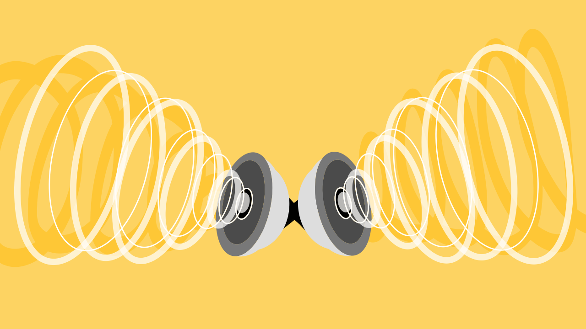

ACÚSTICA
¿Qué es?
La Acústica es una rama de la física que se dedica al estudio completo del sonido, el infrasonido y el ultrasonido, es decir, de las ondas mecánicas que se propagan a través de la materia (sólidos, líquidos o gases). Su campo de estudio abarca desde la generación y la transmisión de estas ondas hasta su recepción y percepción, empleando modelos físicos y matemáticos para describir los fenómenos sonoros. Tiene aplicaciones esenciales y diversas en muchos campos, incluyendo la arquitectura (para el aislamiento y acondicionamiento de espacios), la música, la medicina (con el uso del ultrasonido) y el control de la contaminación acústica.
¿Cómo se forman?
Compresión Sin Pérdida
Compresión sin Pérdida
Este método reduce el tamaño del archivo sin eliminar absolutamente ningún dato de la señal de audio original. El audio resultante es una réplica exacta, a nivel de bit, del archivo original sin comprimir.
¿Cómo se logra?
Se basa en técnicas de compresión de datos que buscan y eliminan la redundancia en la información de la señal de audio, de forma similar a como se comprime un archivo ZIP o RAR.
- Eliminación de Redundancia: El algoritmo identifica patrones repetitivos en los datos del audio (como secuencias de bits idénticas o muy similares).
- Codificación Eficiente: En lugar de guardar el patrón repetitivo una y otra vez, el algoritmo lo reemplaza con una referencia o código más corto (por ejemplo, "repita este sonido 500 veces").
- Reversibilidad: Al descomprimir el archivo, el reproductor utiliza las referencias guardadas para reconstruir la señal original de manera perfecta, restaurando el 100% de los datos originales.
Compresión con Pérdida
Este método logra una reducción de tamaño mucho mayor al eliminar permanentemente información de la señal de audio. Se basa en modelos de percepción humana para descartar aquellos datos que es poco probable que el oído humano detecte.
¿Cómo se logra?
Se utiliza un concepto llamado modelo psicoacústico, que explota las limitaciones del oído humano.
- Análisis Psicoacústico: El algoritmo analiza la señal de audio para identificar sonidos y frecuencias que el oído humano no percibe bien, debido a:
Enmascaramiento de Frecuencia: El oído humano deja de percibir sonidos suaves cuando están cerca de sonidos mucho más fuertes en una frecuencia similar. El algoritmo elimina el sonido suave.
Enmascaramiento Temporal: Un sonido fuerte y repentino (como un tamborazo) puede "ocultar" sonidos que ocurren inmediatamente antes o después de él. El algoritmo elimina o reduce los datos de esos sonidos "ocultos".
Frecuencias Inaudibles: Se eliminan las frecuencias muy bajas (infrasonido) o muy altas (ultrasonido) que están fuera del rango de audición humano (típicamente de 20 Hz a 20,000 Hz).
- Eliminación Irreversible: Una vez eliminados, estos datos se pierden para siempre. El archivo resultante es mucho más pequeño, pero es una aproximación del original.
- Tasa de Bits (Bitrate): La cantidad de información eliminada se controla mediante la tasa de bits (kbps) elegida. Una tasa más baja (ej. 128 kbps) implica más pérdida y menor calidad; una tasa más alta (ej. 320 kbps) implica menos pérdida y mayor calidad.
